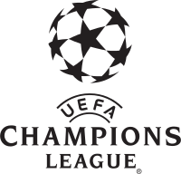
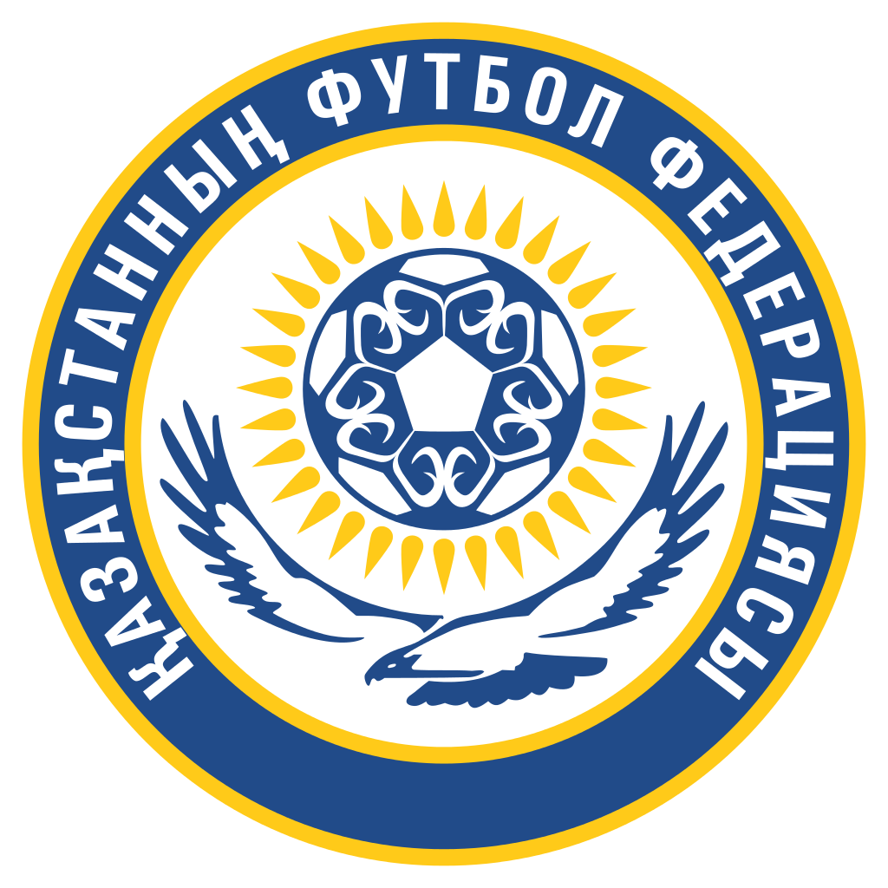

Қазақстан футбол федерациясының Техникалық орталығы отандық футболдың мамандарын даярлайды. Орталықта бұқаралық футболдан бастап кәсіби командалардың жаттықтырушылары мен мамандары дәріс алады. Оқуды тәмамдап, емтихан тапсырғаннан кейін «PRO» және «А» категориясы бойынша бапкерлердің лицензиясы беріледі.
«PRO» категориясы Премьер-Лига клубтарында бас бапкер қызметін атқаруға мүмкіндік береді. Ал, «А» категориясымен Премьер-Лигада жаттықтырушы немесе Бірінші Лигада бас бапкер, сонымен қатар, Премьер-Лига клубтарында жастар футболын дамыту бағдарламасының жетекшісі болып еңбек етуге болады.
Сонымен қатар, Қазақстан футбол федерациясының Техникалық орталығы «В» категориясы (Бірінші Лига бапкері және Бірінші Лиганың жастар футболын дамыту бағдарламасының жетекшісі) және бұқаралық футбол мен Екінші Лига үшін «С» категориясы бойынша бапкерлер даярлайды. Дене даярлығының жаттықтырушыларын, қақпашылардың жаттықтырушыларын, дәрігерлер мен кәсіби командалардың физиотерапевттеріне лицензия беріп, әйелдер футболына арналған семинарлар ұйымдастырады.
Техникалық орталық өз тыңдаушыларын УЕФА бағдарламасымен оқытады. Дәріс оқу мен тәжірибелік сабақтарға Еуропаның тәжірибелі сарапшылары мен Қазақстанның үздік оқытушыларын шақырады.
Қазақстан футбол федерациясының Техникалық орталығының қызметң жөнінде Қазақстанның еңбек сіңірген жаттықтырушысы, Қазақстан Республикасының әлеуметтік ғылымдарының академигі, профессор, педагогика ғылымдарының докторы, Техникалық орталықтың директоры Қайрат Ілиясұлы Адамбеков әңгімелеп берді.
- Қазақстан футбол федерациясының Техникалық орталығы 2007 жылдан бастап жұмыс істейді, - деп бастады Қайрат Адамбеков. - Федерация басшысының төрағалығымен өткен алғашқы жиында-ақ орталықтың негізгі міндеті жаңа құрылымдағы бапкерлерді даярлау екені айтылды. Ал, осы уақытқа дейін мамандарды даярлаумен Қазақ дене шынықтыру институты айналысып келді. Білім ордасының қазіргі атауы Спорт және туризм академиясы деп аталады. Институттың футбол және хоккей кафедрасына еліміздің жетекші ғалымдары мен мамандары жұмылдырылды. Оқу орны Кеңес Одағы кезеңінде үздік бестікке енді. Кафедраны КСРО-ның еңбек сіңірген жаттықтырушысы, доцент Қазбек Дәулетбекұлы Байболов басқарды. Сонымен қатар, ол допты хоккейден алматалық «Динамо» ұжымының бапкері болды. Алайда, футболдың теориясы мен әдістемесін жақсы меңгерді. Кафедрада доцент Межов Александр Абрамович еңбек етті. Ол сол кезеңде Кеңес Одағының ең үздік әдіскерлерінің бірі саналды. Айтпақшы, Межов бір уақыттары «Қайраттың» да бапкері болды. 1998 жылы кафедра жабылып, оқытушылардың бір бөлігі шетелге кетті.
.png)